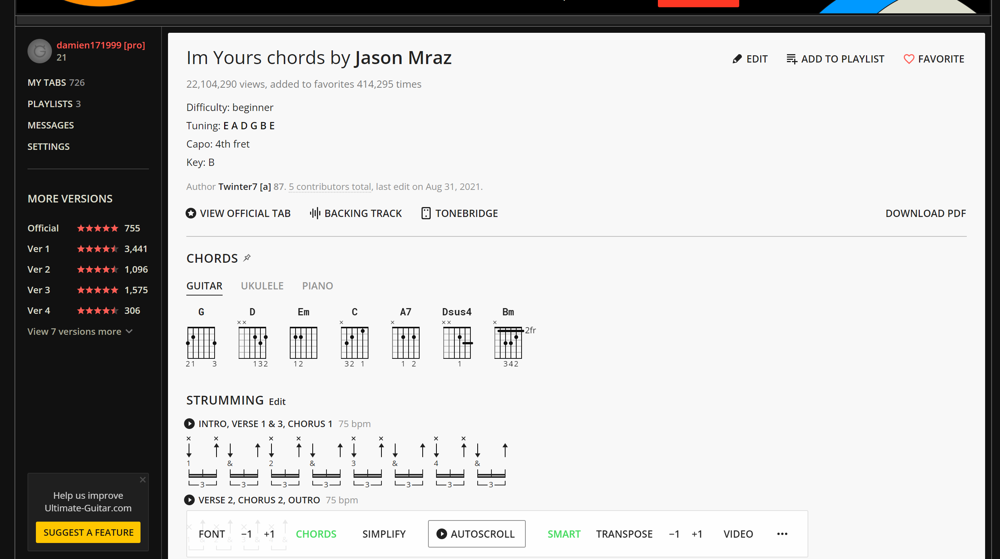

You can refer to this youtube video to learn how to play "I'm Yours"
Below, you can learn how to play the song using Ultimate Guitar
 TabsNote that for the song "I'm Yours", the tabs are already in the app are already in the key of G ( since the four chords are G, Em, C, and D).
The capo is to be placed on the fourth fret